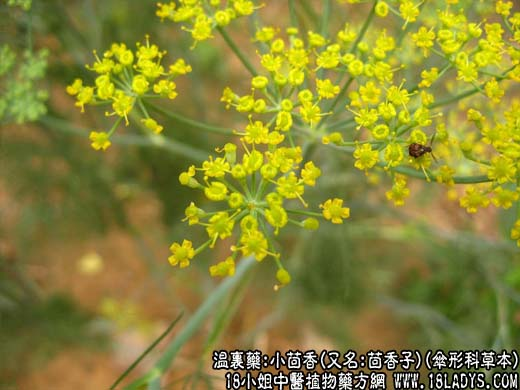

【中药概述】
小茴香，别名蘹香、蘹香子、茴香子、土茴香、野茴香、谷茴香、谷香,香子、小香，为伞形科草本植物茴香的成熟果实。辛、温。归肝、肾、脾、胃、经。
1．暧肝止痛：用于寒疝腹痛、睾丸偏坠肿痛及阴囊水肿等，如（景岳全书<暧肝煎>）。
2．温中和胃：用于脾胃虚寒，呕吐食少，脘腹胀痛等。可与生姜，吴茱萸同用。
【药效鉴别】
本品行散之力较强，长于暧肝肾而疗下焦之痛，又能温中散寒、理脾胃之气而开胃、止呕。
【临证应用】
寒证腹痛：本品炒热，布包温熨下腹部。
【药理作用】
能降低胃的张力，随后又刺激之，使其蠕动正常化，缩短排空时间，对肠则增进张力及蠕动，促进气体排出，有时在兴奋后蠕动又降低，有助于缓解痉挛，减轻疼痛。
【化学成分】
主含茴香醚、茴香酮、茴香酸等挥发油约3～6％，脂肪油约18％。
【用量用法】
3——8g，水煎服，或入丸、散剂。
【使用注意】
辛温助火，阴虚火旺及热证者忌。
【附】
盐小茴香：微辛，温。归肝、肾、胃、脾经。专走下焦，温肾暖肝散寒。以本品炒研末，将猪肾切片，掺药其中，纸裹煨熟，与酒同服，可温肾补阳，散寒止痛。若妇女少腹冷痛、痛经、闭